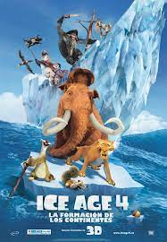

Scrat estaba en una gran colina cuando de repente se cae al centro de la tierra donde empieza a girar una esfera y eso hace que los bloques de tierra se muevan dependiendo para que lugar gire. Lejos de esa zona aparece Manny preguntándole a crash y eddie donde esta morita ellos le responden que esta con Louis en la cascada, Manny se preocupa y va por ella y empiezan una conversación después aparece diego rugiendo y aparece la familia de sid: Milton (papa), Eunice (mama), Fungus (tio) y la abuelita que anda buscando a su mascota muerta preciosa. la familia de sid esta conduciendo un tronco y la abuelita esta amarada al tronco y golpean a diego llevándoselo con el, diego ve que esta morita y el se afirma de un tronco para no golpearla y en ese momento Sid aparece y su familia deja a la abuelita y se escapan sin que Sid se de cuenta.
La abuelita desaparece y Sid, Manny y Diego van en busca de ella, Manny se da cuenta que morita se habia escapado con Louis para espiar a Ethan, Manny enfurecido la regaña y se dicen cosas terribles justo después de eso se empiezan a formar los continentes Manny, Sid y Diego se van en un pedazo de hielo, Ellie manda a todos los animales para que caminen a un gran camino de tierra por que una gran pared de tierra esta avanzando y si los alcanza los aplastará, los animales empiezan a caminar de inmediato. Manny, Sid y Diego entran a una gran tormenta con tornados rayos y relámpagos, después que salen de esa gran tormenta se encuentran con la abuelita que se quedo dormida en un árbol del pedazo de hielo.
Después aparece Scrat en un pedazo de hielo el llega a una isla donde encuentra una bellota en el fondo del mar el se sumerge y se da cuenta que es un mapa para llegar a una isla de bellotas pero es capturado por unos piratas. Luego el mismo barco de hielo se acerca al pedazo de hielo de Manny y sus amigos donde se encuentran unos temibles piratas: Capitán Tripa un orangután, Shira una tigresa dientes de sable, Gupta un tejón, Flynn un elefante marino, Arsenal una cangura, Silas un pato, Guiño un conejo y boris un jabalí. todos ellos capturan a manny, sid, diego y la abuelita perro ellos logran escapar por que parten el barco, Manny y sus amigos se suben a un pedazo de hielo (junto con Scrat) y salvan a Shira sin que ella quiera, Tripa se enfurese por que cuando Manny partió el barco, voto su tesoro de frutas, y todos los piratas se escaparon.
Mientras Manny y sus amigos llegan a una isla y tienen de prisionera a Shira, en la noche Diego habla con Shira. Mientras tanto los animales en el continente estan descansando y Ethan habla con Morita y le dice que no se debe juntar con Louis,al amanecer Manny se da cuenta que los piratas también estaban en la isla y esclavizan a los damanes para que les den frutas y un barco, Manny recluta a más damanes para luchar, ellos hacen un gran plan. Todos los piratas bajan del barco para luchar, Sid debería haber agarrado el barco pero comio una mora que lo paralizó y el barco se estaba alejando, Manny, Sid, la abuelita y Diego se suben al barco y Scrat los sige, Tripa esta apunto de saltar al barco pero Shira le impide que llege al barco, Tripa se enfurece con ella y todos los piratas incluyendo a Shira se suben a un pedazo de hielo.
Manny y sus amigos se van en el barco. luego se encontraron a unas sirenas que hicieron creer a Sid que era una perezosa, a Diego que era Shira, a Manny que era Ellie y Morita, y a la abuelita que era un perezoso musculoso pero Manny se da cuenta que eran sirenas y solo querían comérselos y logran escapar, Scrat se imagina que es Scratte pero no le interesa luego se imagina que es una bellota y la intenta clavar y todas las sirenas golpean a Scrat. Mientras en el continente todos siguen caminando y Morita esta con Ethan y le dice que ya no es amiga de Louis, pero Louis escucha eso y se deprime y todos los animales se dan cuenta que no hay camino de tierra todos los animales se asustan por que están apunto de ser aplastados.
Y en el barco ya llegaron al continente la abuelita sigue buscando a preciosa y manny se da cuenta de que no existe camino de tierra y la gran pared de tierra ya llegó a su fin, Manny se preocupa mucho y ve que los piratas habían capturado a Ellie y Morita, Tripa le dice a Manny que si se entrega las deja libre, Manny se entrega pero era falso y va a asesinar a Morita y justo llega Louis para luchar contra Tripa pero le da gracia que un topo le vaya a ganar y le pasan una pequeña espada y le da en el pie y logra liberar a Morita pero a Ellie no y Morita le pega Tripa y salva a Ellie y Manny lucha contra Tripa en un pedazo de hielo, todos los piratas luchan contra Ellie, Morita, Louis, Diego y Shira pero eran demasiados, y la abuelita llama a preciosa y no estaba muerta era un gran ballena, Sid y la abuelita entran dentro de ella y enpiesza a disparar agua y logran derrotar a los piratas mientras Manny derroto a Tripa y Tripa se encuentra una sirena y cree que es una gorila y las sirenas se lo comen.
Morita se pregunta donde van a vivir y Manny lleva a todos los animales a la isla de los damanes y Morita quiere salir con Louis, Manny la deja salir con él, Shira y Diego se quedan juntos. Scrat por fin llego a la isla de las bellotas en ese lugar esta lleno de ardillas como Scrat y Scraty ellos les dicen que ese lugar se llama Scratlantis, El Rey de Scratlantis le da la Bienvenida y le muestra a Scrat todo el Lugar : Hubo Artes,Obras y hasta jacuzis de Bellotas,con tanta emoción que tenia, Scrat saca todas las bellotas y se encuentra un bellota enorme, Scrat trata de quitar la gigante pero el Rey le dice que deje de comportarse como un roedor,Scrat podria cambiar pero no le hizo Caso y resulta que la Bellota Gigante era un tapón y empieza a salir mucha agua y Scratlantis queda bajo el agua y Scrat en el desierto termina Llorando y gritando Como nunca lo hizo Antes.
|  |
| Productor : Lori Forte, John C. Donkin |
| Pais : Estados Unidos |
| Idioma: Ingles |
| Fecha de estreno: 27 de junio de 2012 |
| Presupuesto : 95 mill. de $ |
| Recaudacion: 877,2 mill. de $ |
| Duracion:1h 28m |